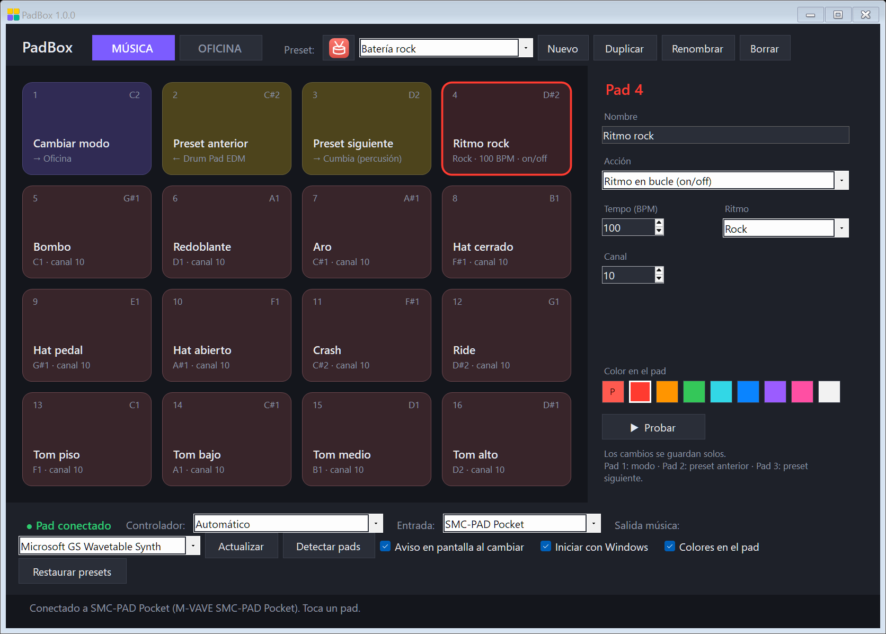
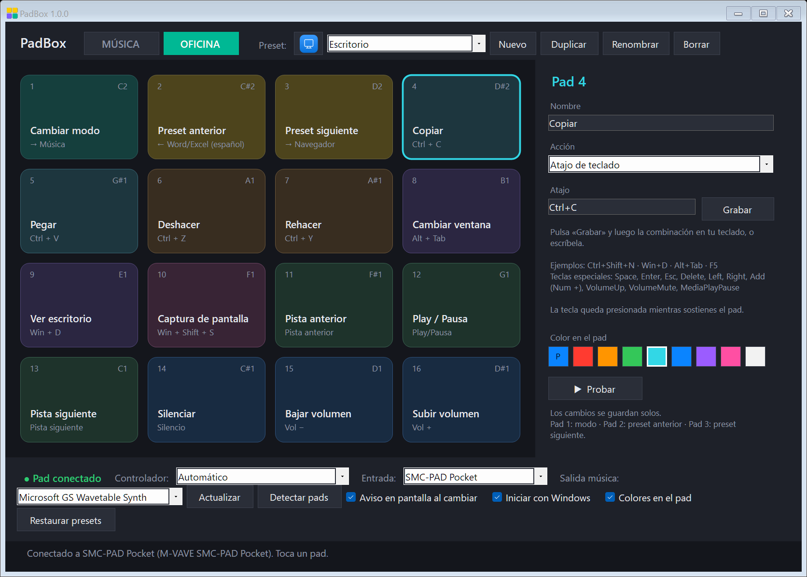
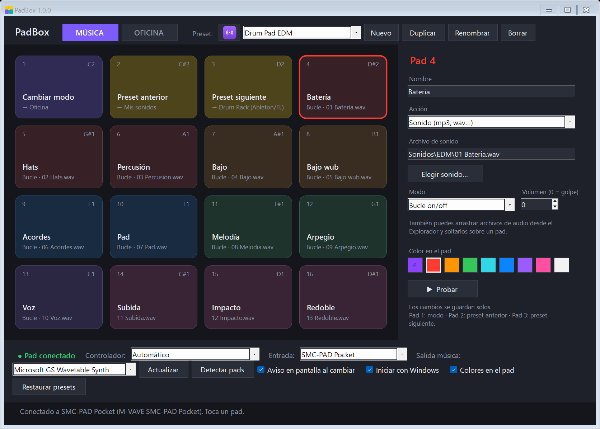

PadBox convierte cualquier controlador MIDI de pads en un instrumento con ritmos y sonidos propios, y en un panel de atajos para Windows, OBS, Photoshop y más.

El pad 1 cambia entre Música y Oficina, y los pads 2 y 3 pasan al preset anterior y al siguiente. Al cambiar aparece un aviso pequeño con el nombre del preset, y si tu controlador lo permite, los pads se pintan con sus colores.
Cada preset tiene su propio ritmo en el pad 4, su instrumento, su tonalidad y su batería.
Cada grupo de funciones tiene su color para encontrarlo de un vistazo.


PadBox es portátil: todo vive en su carpeta, incluida tu configuración.
Guarda la carpeta donde quieras, por ejemplo en Documentos.
Por USB. PadBox reconoce los modelos de la lista solo.
¿Otro modelo? Elige «Otro controlador» y pulsa «Detectar pads».
Funciona con cualquier controlador MIDI de 8 o 16 pads. Estos modelos tienen perfil propio:
| Controlador | Pads | Colores en los pads | Estado |
|---|---|---|---|
| M-VAVE SMC-PAD Pocket | 16 | RGB por pad | Probado |
| M-VAVE SMC-PAD | 16 | — | Sin probar |
| M-VAVE SMK-25 / SMK-37 | 8 | — | Sin probar |
| Akai MPD218 / MPD226 / MPD232 | 16 | — | Sin probar |
| Akai LPD8 · Akai MPK Mini | 8 | — | Sin probar |
| Novation Launchpad X · Mini MK3 · Pro MK3 | 16 (bloque 4×4) | RGB por pad | Sin probar |
| Cualquier otro controlador MIDI | 8 o 16 | — | Con «Detectar pads» |